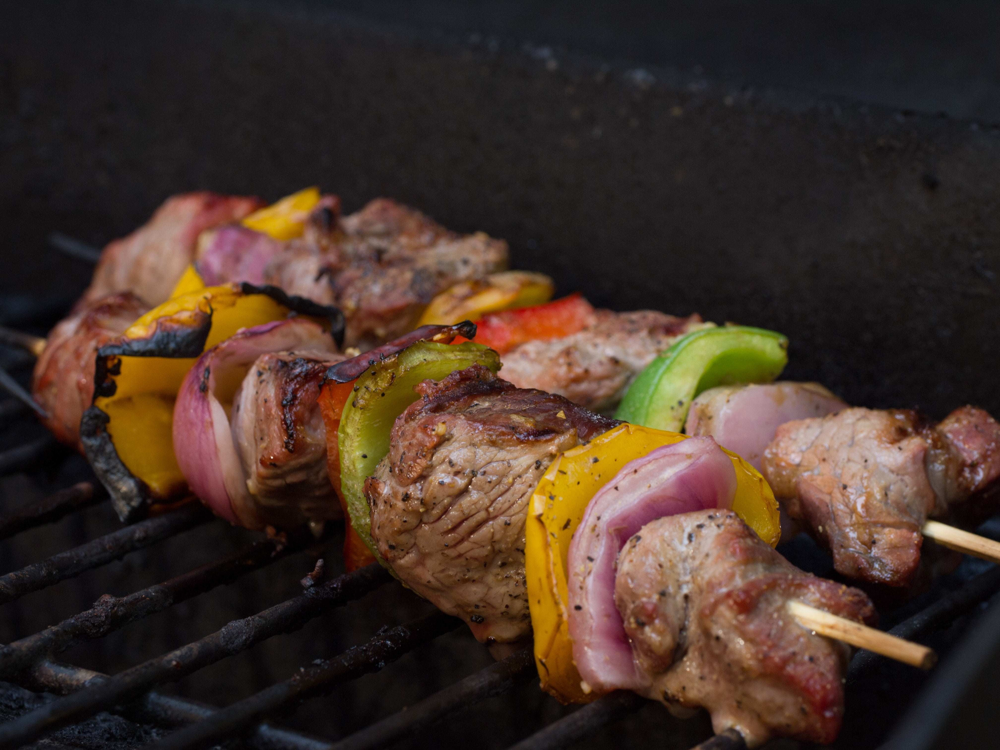
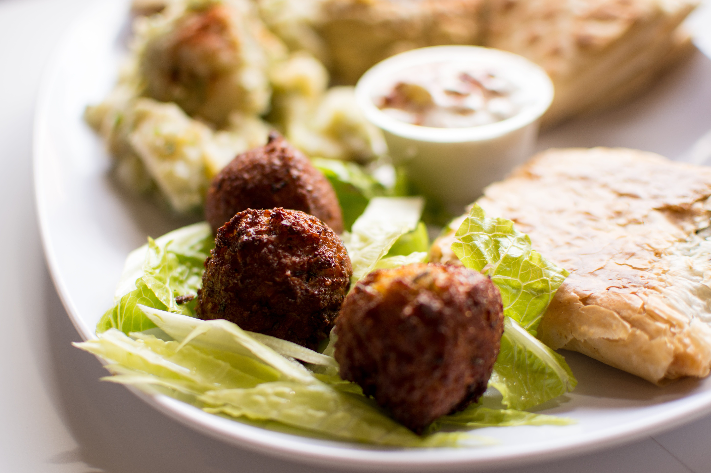
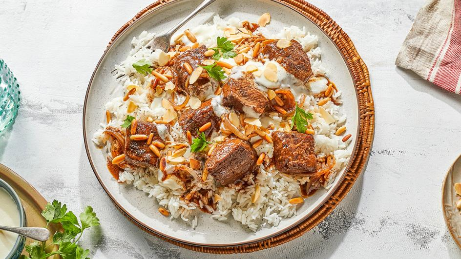

Gaza Restaurant
home // about // orders // wich list // mnue // contact
| Dish | about dish | image | price |
|---|---|---|---|
| Shish kebab |
Grilled meat on skewers, juicy and full of flavor. Served with rice, grilled vegetables, and a side of garlic or yogurt sauce. |
 | 300$ |
| macaroni with bechamel |
Oven-baked pasta with creamy béchamel sauce, layers of seasoned meat, and melted cheese on top. Warm, rich, and full of flavor. |

|
150$ |
| Ozi rice with chicken |
Flavored rice cooked with spices, mixed with peas, carrots, and tender meat. Served hot with roasted nuts on top for extra crunch. |
 |
150$ |
| Palestinian Musakhan |
Traditional flatbread topped with juicy chicken, caramelized onions, olive oil, and sumac. Baked until golden and served warm with toasted pine nuts. |
 |
420$ |
| falafel |
Crispy chickpea patties, fried to golden perfection. Served with fresh vegetables, tahini sauce, and warm pita bread. |
 | 30$ |
| mansaf |
A traditional Jordanian dish made with tender lamb cooked in creamy jameed sauce, served over saffron rice and topped with toasted nuts. Comes with warm shrak bread on the side. |
 | 500$ |